Anleggsmidler er faste eiendeler som en bedrift planlegger å beholde og bruke i mer enn ett år i sin løpende drift. Disse eiendelene utgjør ryggraden i mange bedrifters operasjoner og representerer ofte den største delen av totalkapitalen. Anleggsmidler skiller seg fra omløpsmidler ved at de ikke er ment for salg eller konvertering til kontanter på kort sikt.
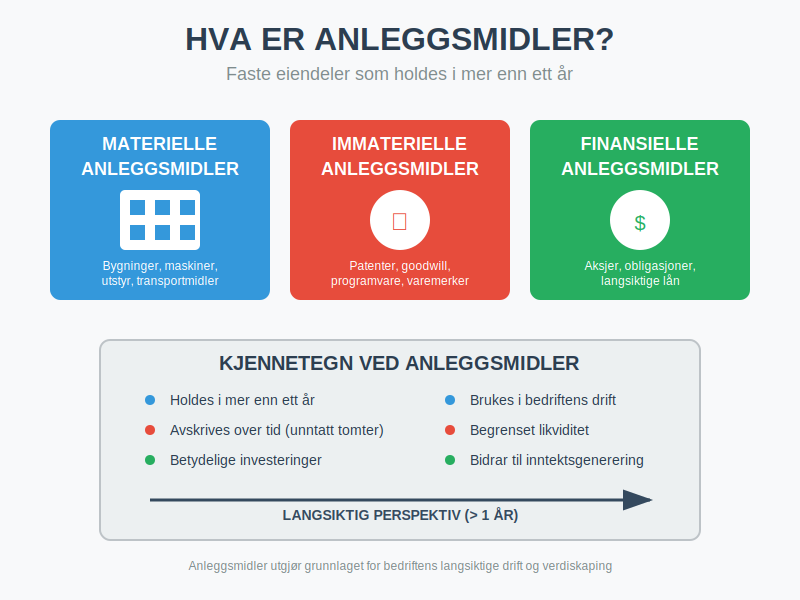
Seksjon 1: Definisjon og Karakteristika
1.1 Grunnleggende Definisjon
Anleggsmidler defineres som eiendeler som:
- Holdes for bruk i produksjon eller levering av varer og tjenester
- Leies ut til andre for inntektsgenerering
- Brukes til administrative formål
- Forventes brukt i mer enn én regnskapsperiode (vanligvis over ett år)
1.2 Kjennetegn ved Anleggsmidler
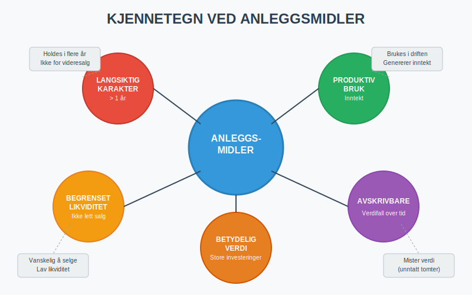
Anleggsmidler har flere distinkte egenskaper:
- Langsiktig karakter: Holdes i flere år
- Produktiv bruk: Bidrar til inntektsgenerering
- Begrenset likviditet: Ikke lett konverterbare til kontanter
- Avskrivbare: Verdi reduseres over tid (med unntak av tomter)
- Betydelig verdi: Ofte store investeringer
Seksjon 2: Klassifisering av Anleggsmidler
Anleggsmidler klassifiseres i tre hovedkategorier basert på deres natur og egenskaper:
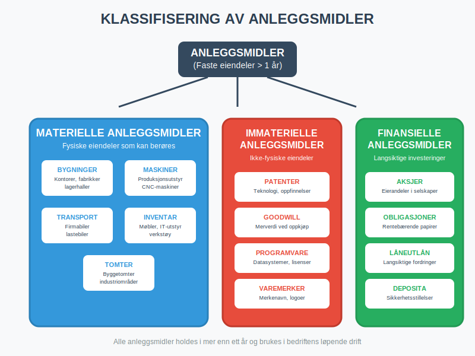
2.1 Materielle Anleggsmidler
Materielle anleggsmidler er fysiske eiendeler som kan berøres og sees. Disse utgjør ofte den største delen av anleggsmidlene. De fleste materielle anleggsmidler som brukes aktivt i drift klassifiseres som varige driftsmidler.
Bygninger og Konstruksjoner
- Kontorbygg: Hovedkontor, avdelingskontorer
- Produksjonslokaler: Fabrikker, verksteder, lagerhaller
- Spesialbygg: Kjølelagre, renseanlegg, kraftstasjoner
- Infrastruktur: Veier, broer, kaier (for relevante bransjer)
Tomter og Grunn
- Byggetomter: Land hvor bygninger er oppført
- Industriområder: Områder for produksjonsvirksomhet
- Naturressurser: Gruver, steinbrudd, skogsområder (se tømmerkonto for skattemessig behandling av skogsinntekter)
Maskiner og Teknisk Utstyr
- Produksjonsmaskiner: CNC-maskiner, presser, ovner
- Transportbånd: Automatiserte produksjonslinjer
- Spesialutstyr: Medisinsk utstyr, laboratorieapparatur
- Sikkerhetssystemer: Brannvern, alarmsystemer
Maskiner og teknisk utstyr som brukes aktivt i produksjon eller drift klassifiseres som varige driftsmidler og avskrives systematisk over deres økonomiske levetid.
Transportmidler
- Firmabiler: Personbiler for ansatte
- Lastebiler: For transport av varer
- Spesialkjøretøy: Gaffeltrucks, kraner, gravemaskiner
- Fartøy: Båter, skip (for maritime virksomheter)
Inventar og Utstyr
- Kontormøbler: Skrivebord, stoler, skap
- IT-utstyr: Datamaskiner, servere, nettverksutstyr
- Verkstøy: Håndverktøy, måleapparatur
- Installasjonsutstyr: Elektriske anlegg, rørleggerarbeid
2.2 Immaterielle Anleggsmidler
Immaterielle anleggsmidler er ikke-fysiske eiendeler som likevel har økonomisk verdi for bedriften. Disse eiendelene omfatter immaterielle eiendeler som patenter, varemerker og goodwill. I motsetning til materielle anleggsmidler som avskrives, brukes amortisering for å fordele kostnaden av immaterielle eiendeler over deres økonomiske levetid.
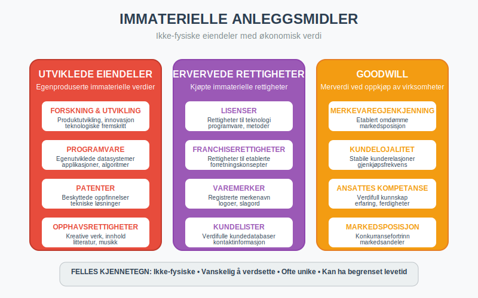
Utviklede Eiendeler
- Forskning og utvikling (FoU): Kostnader til produktutvikling
- Programvare: Egenutviklede datasystemer
- Patenter: Rettigheter til oppfinnelser og teknologi
- Opphavsrettigheter: Rettigheter til kreative verk
Ervervede Rettigheter
-
Lisenser: Rettigheter til å bruke andres teknologi
-
Franchiserettigheter: Rettigheter til å drive under etablerte merker
-
Varemerker: Registrerte merkenavn og logoer
-
Kundelister: Verdifulle kundedatabaser
-
Domenenavn: Viktige for digital markedsføring og merkevarebygging. Se Domenenavn i Regnskap – Behandling og Klassifisering.
Goodwill
Goodwill oppstår ved oppkjøp av andre virksomheter og representerer:
- Merkevaregjenkjenning: Etablert omdømme i markedet
- Kundelojalitet: Stabile kunderelasjoner
- Ansattes kompetanse: Verdifull kunnskap og erfaring
- Markedsposisjon: Konkurransefortrinn
For en dybdegående forklaring av goodwill, se vår komplette guide til goodwill.
2.3 Finansielle Anleggsmidler
Finansielle anleggsmidler er langsiktige finansielle investeringer som ikke er ment for handel.
Eierandeler i Andre Selskaper
- Datterselskaper: Kontrollerende eierandeler (>50%)
- Tilknyttede selskaper: Betydelig innflytelse (20-50%)
- Joint ventures: Felles kontrollerte virksomheter
- Strategiske investeringer: Mindre eierandeler med strategisk formål
Langsiktige Fordringer
- Aksjonærlån til AS: Lån gitt til aksjeselskapet
- Lån til ansatte: Langsiktige personallån
- Deposita: Langsiktige sikkerhetsstillelser
- Obligasjoner: Langsiktige rentebærende verdipapirer
Seksjon 3: Anskaffelse og Innregning
3.1 Anskaffelseskost
Anskaffelseskosten for anleggsmidler inkluderer alle kostnader som er nødvendige for å bringe eiendelen til ønsket tilstand og lokasjon:
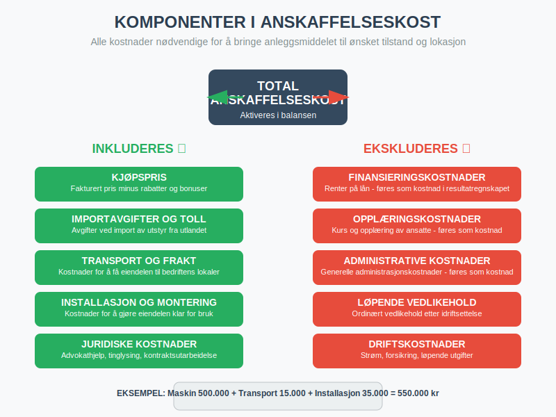
| Kostnadselement | Inkluderes | Eksempel |
|---|---|---|
| Kjøpspris | ✓ | Fakturert pris for maskinen |
| Importavgifter | ✓ | Toll og avgifter ved import |
| Transport | ✓ | Frakt til bedriftens lokaler |
| Installasjon | ✓ | Montering og tilkobling |
| Juridiske kostnader | ✓ | Advokathjelp ved eiendomskjøp |
| Finansieringskostnader | ✗ | Renter på lån (føres som kostnad) |
| Opplæringskostnader | ✗ | Kurs for ansatte (føres som kostnad) |
3.2 Bagatellgrense
I Norge gjelder en bagatellgrense på 15.000 kroner for anleggsmidler. Eiendeler under denne grensen kan:
- Kostnadsføres direkte i anskaffelsesåret
- Aktiveres og avskrives over flere år (valgfritt)
3.3 Egentilvirkede Anleggsmidler
For egentilvirkede anleggsmidler inkluderes:
- Direkte materialkostnader
- Direkte lønnskostnader
- Andel av indirekte kostnader (overhead)
- Ikke finansieringskostnader eller administrative kostnader
Seksjon 4: Avskrivninger
4.1 Avskrivningsprinsippet
Avskrivninger fordeler anskaffelseskosten for et anleggsmiddel over dets brukstid. Dette gjenspeiler at eiendelen gradvis mister verdi gjennom:
- Fysisk slitasje: Bruk og elde
- Teknologisk foreldelse: Nye teknologier gjør eiendelen mindre verdifull
- Økonomisk foreldelse: Endrede markedsforhold
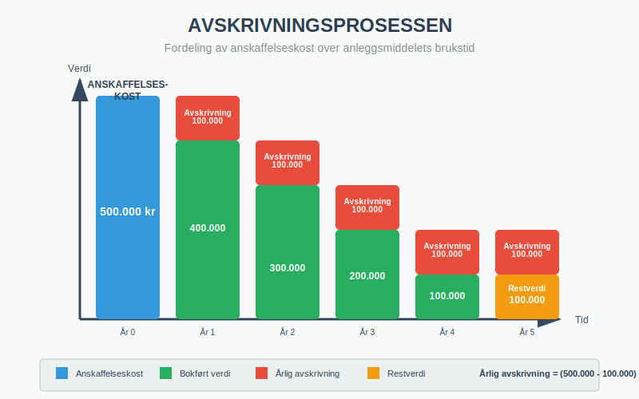
4.2 Avskrivningsmetoder
Lineær Avskrivning (Mest Vanlig)
Lineær avskrivning fordeler kostnaden jevnt over brukstiden:
Årlig avskrivning = (Anskaffelseskost - Restverdi) ÷ Brukstid
Eksempel:
- Maskin kjøpt for 500.000 kr
- Forventet brukstid: 10 år
- Restverdi: 50.000 kr
- Årlig avskrivning: (500.000 - 50.000) ÷ 10 = 45.000 kr
Saldoavskrivning
Saldoavskrivning anvender en fast prosentsats på bokført verdi:
| Anleggsmiddeltype | Maksimal saldosats |
|---|---|
| Personbiler | 25% |
| Maskiner og inventar | 20% |
| Bygninger | 4% |
| Ervervet goodwill | 20% |
| Patenter og lisenser | 20% |
Eksempel saldoavskrivning:
- Bil kjøpt for 400.000 kr (25% saldosats)
- År 1: 400.000 × 25% = 100.000 kr avskrivning
- År 2: 300.000 × 25% = 75.000 kr avskrivning
- År 3: 225.000 × 25% = 56.250 kr avskrivning
4.3 Avskrivningsplan
En systematisk avskrivningsplan bør etableres for alle anleggsmidler:
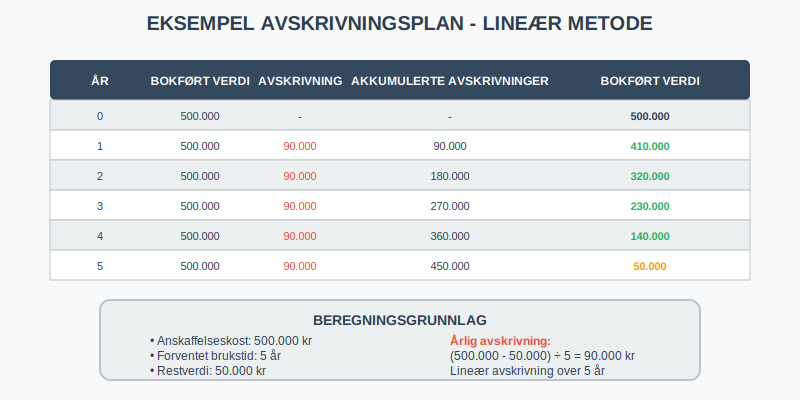
Seksjon 5: Verdsettelse og Nedskrivninger
5.1 Løpende Verdsettelse
Anleggsmidler verdsettes til anskaffelseskost minus akkumulerte avskrivninger, med mindre det foreligger verdifall.
5.2 Nedskrivninger
Nedskrivning er nødvendig når gjenvinnbart beløp er lavere enn bokført verdi.
Indikatorer på Verdifall
-
Eksterne faktorer:
- Betydelig fall i markedsverdi
- Negative endringer i teknologi eller marked
- Økte renter som påvirker diskonteringsrente
-
Interne faktorer:
- Fysisk skade eller forringelse
- Endringer i bruk eller forventet bruk
- Dårligere økonomisk ytelse enn forventet
Beregning av Nedskrivning
Nedskrivning = Bokført verdi - Gjenvinnbart beløp
Hvor gjenvinnbart beløp er det høyeste av:
- Virkelig verdi minus salgskostnader
- Bruksverdi (nåverdi av fremtidige kontantstrømmer)
Seksjon 6: Regnskapsføring
6.1 Innregning ved Anskaffelse
Debet: Anleggsmidler (balanse) 500.000
Kredit: Bank/Leverandørgjeld 500.000
6.2 Årlige Avskrivninger
Debet: Avskrivningskostnad (resultat) 45.000
Kredit: Akkumulerte avskrivninger 45.000
6.3 Salg av Anleggsmidler
Ved salg beregnes gevinst/tap:
Gevinst/Tap = Salgspris - Bokført verdi
Eksempel:
- Bokført verdi: 200.000 kr
- Salgspris: 180.000 kr
- Tap ved salg: 20.000 kr
Debet: Bank 180.000
Debet: Akkumulerte avskrivninger 300.000
Debet: Tap ved salg av anleggsmidler 20.000
Kredit: Anleggsmidler 500.000
Seksjon 7: Praktiske Eksempler
7.1 Produksjonsbedrift
TechProd AS - Teknologiprodusent:
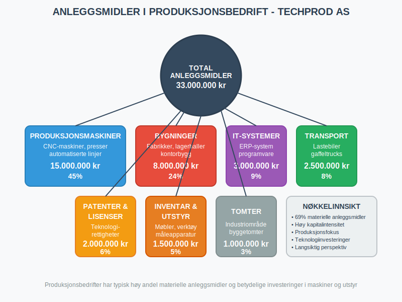
| Anleggsmiddeltype | Verdi (NOK) | Andel |
|---|---|---|
| Produksjonsmaskiner | 15.000.000 | 45% |
| Bygninger | 8.000.000 | 24% |
| IT-systemer | 3.000.000 | 9% |
| Transportmidler | 2.500.000 | 8% |
| Patenter og lisenser | 2.000.000 | 6% |
| Inventar og utstyr | 1.500.000 | 5% |
| Tomter | 1.000.000 | 3% |
| Total | 33.000.000 | 100% |
7.2 Servicebedrift
ConsultCorp AS - Konsulentselskap:
| Anleggsmiddeltype | Verdi (NOK) | Andel |
|---|---|---|
| Kontorbygg | 5.000.000 | 50% |
| IT-utstyr og programvare | 2.000.000 | 20% |
| Kontormøbler | 1.500.000 | 15% |
| Firmabiler | 1.000.000 | 10% |
| Kundelister og goodwill | 500.000 | 5% |
| Total | 10.000.000 | 100% |
Seksjon 8: Skattemessige Forhold
8.1 Skattemessige Avskrivninger
Skattemessige avskrivninger kan avvike fra regnskapsmessige avskrivninger, noe som kan skape utsatt skattfordel eller -plikt:
Saldogrupper for Skatteformål
| Saldogruppe | Beskrivelse | Sats |
|---|---|---|
| a | Bygninger og anlegg | 4% |
| b | Personbiler, traktorer, maskiner | 25% |
| c | Maskiner, redskap, instrumenter | 20% |
| d | Personbiler over 500.000 kr | 25% |
| e | Skip, rigger, fly | 14% |
8.2 Gevinst og Tap
- Gevinst ved salg: Skattepliktig inntekt
- Tap ved salg: Fradragsberettiget kostnad
- Gjenvinning: Ved saldoavskrivning kan gevinst inntil tidligere avskrivninger være skattepliktig
Seksjon 9: Digitalisering og Fremtiden
9.1 Digitale Anleggsmidler
Moderne bedrifter investerer stadig mer i digitale anleggsmidler:
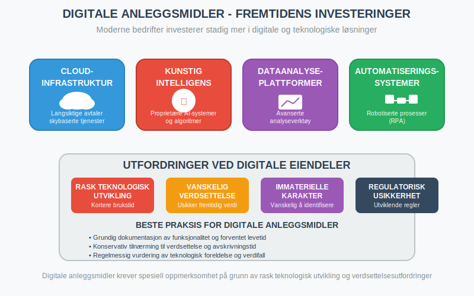
- Cloud-infrastruktur: Langsiktige avtaler om skybaserte tjenester
- Kunstig intelligens: Proprietære AI-systemer og algoritmer
- Dataanalyse-plattformer: Avanserte analyseverktøy
- Automatiseringssystemer: Robotiserte prosesser (RPA)
9.2 Utfordringer ved Digitale Eiendeler
- Rask teknologisk utvikling: Kortere brukstid
- Vanskelig verdsettelse: Utfordrende å estimere fremtidig verdi
- Immaterielle karakter: Kompliserer identifikasjon og måling
- Regulatorisk usikkerhet: Utviklende regnskapsregler
Seksjon 10: Beste Praksis og Anbefalinger
10.1 Anleggsmiddelforvaltning
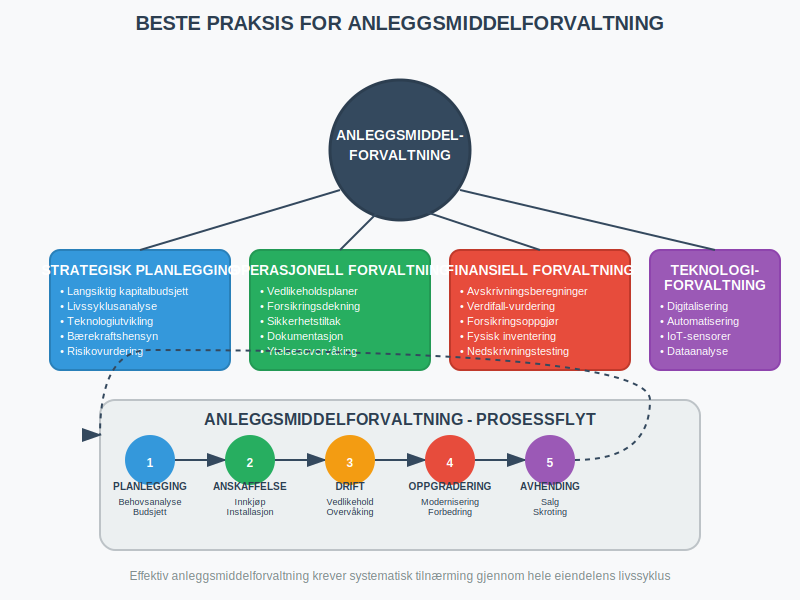
Strategisk Planlegging
- Langsiktig kapitalbudsjett: Planlegg investeringer 3-5 år frem
- Livssyklusanalyse: Vurder totalkostnader over eiendelens levetid
- Teknologiutvikling: Følg med på teknologiske trender
- Bærekraftshensyn: Vurder miljøpåvirkning og energieffektivitet
Operasjonell Forvaltning
- Vedlikeholdsplaner: Systematisk vedlikehold forlenger levetid
- Forsikringsdekning: Adekvat forsikring mot skader og tap
- Sikkerhetstiltak: Beskyttelse mot tyveri og sabotasje
- Dokumentasjon: Komplett dokumentasjon av alle anleggsmidler
10.2 Regnskapsmessig Oppfølging
Månedlige Rutiner
- Avskrivningsberegninger: Kontroller automatiske beregninger
- Verdifall-vurdering: Vurder indikatorer på verdifall
- Forsikringsoppgjør: Følg opp skader og erstatninger
Årlige Rutiner
- Fysisk inventering: Tell og kontroller alle anleggsmidler
- Verdsettelsesgjennomgang: Vurder alle verdsettelsesforutsetninger
- Avskrivningsmetode-evaluering: Vurder om metoder fortsatt er hensiktsmessige
- Nedskrivningstesting: Grundig testing av verdifall
Seksjon 11: Sammenheng med Andre Regnskapselementer
11.1 Påvirkning på Nøkkeltall
Anleggsmidler påvirker viktige finansielle nøkkeltall:
| Nøkkeltall | Beregning | Påvirkning av anleggsmidler |
|---|---|---|
| Totalkapitalrentabilitet | Resultat ÷ Totalkapital | Høye anleggsmidler reduserer rentabilitet |
| Egenkapitalandel | Egenkapital ÷ Totalkapital | Anleggsmidler øker totalkapital |
| Likviditetsgrad | Omløpsmidler ÷ Kortsiktig gjeld | Høy andel anleggsmidler reduserer likviditet |
| Kapitalomsetning | Omsetning ÷ Totalkapital | Effektiv bruk av anleggsmidler øker omsetning |
11.2 Relasjon til Kontantstrøm
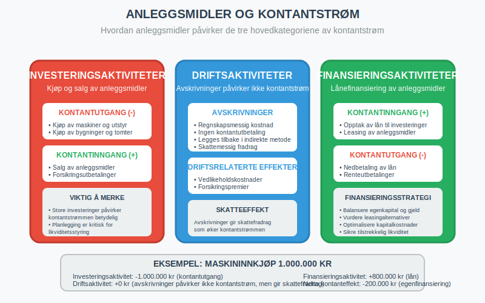
- Investeringsaktiviteter: Kjøp og salg av anleggsmidler
- Driftsaktiviteter: Avskrivninger påvirker ikke kontantstrøm
- Finansieringsaktiviteter: Lånefinansiering av anleggsmidler
Konklusjon
Anleggsmidler er fundamentale for de fleste bedrifters drift og representerer ofte betydelige investeringer som påvirker bedriftens langsiktige konkurranseevne og finansielle stilling. Korrekt håndtering av anleggsmidler - fra anskaffelse og verdsettelse til avskrivninger og eventuell avhending - er kritisk for:
- Nøyaktig finansiell rapportering
- Optimal skatteplanlegging
- Effektiv kapitalforvaltning
- Strategisk beslutningsstøtte
Ved å følge etablerte regnskapsprinsipper og beste praksis kan bedrifter sikre at deres anleggsmidler bidrar maksimalt til verdiskaping og langsiktig suksess. For mer informasjon om relaterte emner, se våre artikler om aktiva generelt, avskrivninger, aksjeselskaper og gevinst- og tapskonto.